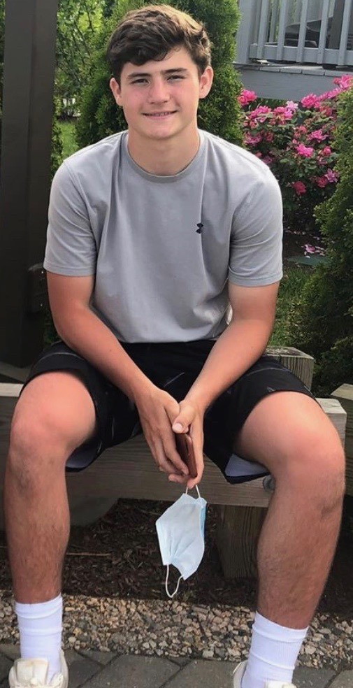

About Me


Hi, my name is Grenville Paynter but people call me Gren. I am a sophomore her at URI studying business. This class is pretty interesting to me so I may change my major, maybe not. I am from Newtown, Connecticut and went to school at Newtown High. I have a sister who is a Junior at Uconn studying mechanical engineering. At home I have two cats and a dog named Otis. For free time I find myself hanging out with friends or trying to stayed entertained. I am a fan of the New York Giants who have been close to my heart for all my life. Danny Dimes baby!! In the right pictureI am playing football for my highschool team. I loved to play football in highschool from how I was always with my friends and having a good time. Making this website was a ton of fun. If you want to contact me, my email is paynterg@uri.edu.
|  | |